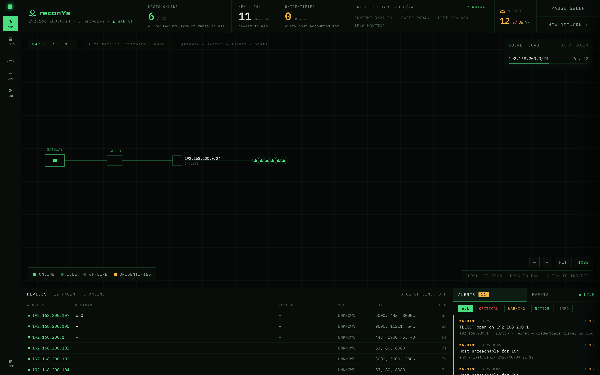

reconYa
Network Reconnaissance Tool
Discover and monitor devices on your network with a modern web interface. Built with Go — zero external dependencies, no root privileges required.

Features
Network Scanning
Native Go TCP probing with 100 concurrent workers. Scans a /24 network in under 3 seconds.
Device Discovery
MAC addresses, vendor identification via IEEE OUI database, hostnames, and device type classification.
Port Scanning
Top 100 ports with service identification and banner grabbing. Background worker pool pattern.
IPv6 Support
Passive IPv6 monitoring via Neighbor Discovery Protocol. Dual-stack device linking via MAC.
Web Dashboard
Modern HTMX-powered interface with dark theme, real-time updates, and network visualization.
Zero Dependencies
Single Go binary. No nmap, no external tools. SQLite database included. Works out of the box.
Installation
Requirements
- Go 1.21+
- make (pre-installed on most systems)
Quick Start
git clone https://github.com/Dyneteq/reconya.git
cd reconya
make install
make start
Open http://localhost:3008
Login: admin / password
Commands
make startStart reconYa as background daemon
make stopStop the service
make statusCheck if service is running
make logsView application logs
make start-devRun in foreground (development mode)
Usage
Getting Started
- Login with your credentials
- Create a new network (e.g.,
192.168.1.0/24) - Select the network and click Start Scan
- Devices appear in real-time as they're discovered
- Click any device for detailed information
Device Details
- MAC address and vendor
- Open ports and services
- Device type classification
- IPv4 and IPv6 addresses
- Web service screenshots
- Online/offline history
Configuration
Edit src/.env to customize settings:
LOGIN_USERNAME=admin
LOGIN_PASSWORD=your_secure_password
JWT_SECRET_KEY=your_jwt_secret
SQLITE_PATH=data/reconya.db
IPV6_MONITORING_ENABLED=true
Architecture
Technology Stack
- Backend: Go API with HTMX templates
- Database: SQLite (embedded, no setup)
- Scanning: Native Go TCP/ARP (no nmap)
- Frontend: Bootstrap 5 dark theme
- Updates: Real-time polling
Scanning Process
- Host Discovery: Parallel TCP probes (80, 443, 22...)
- MAC Resolution: ARP table lookups
- Port Scan: Top 100 ports with 100 workers
- Fingerprint: Vendor + port-based classification
- Web Scan: HTTP title/header extraction
Troubleshooting
No Devices Found
- Check you're on the same network segment
- Verify the CIDR range is correct
- Ensure devices have open ports (80, 443, 22)
- Run
make statusto check service
Missing MAC Addresses
- MAC only visible on same network segment
- Check ARP table:
arp -a - Some devices don't respond to ARP
- Try pinging the device first
Service Won't Start
- Run
make stopfirst - Check port 3008 is available
- Verify
src/.envexists - Check logs:
make logs
Windows CGO Error
- Use
make build-cgo - Install TDM-GCC or MSVC Build Tools
- Ensure CGO_ENABLED=1 is set